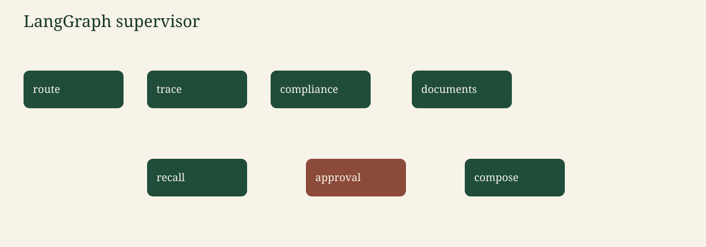

AgriTrace. Fictional data. Canonical write-up: the repository README. Images: docs/assets, referenced relatively from this file.
Canonical copy: README §7.
GraphState carries the question, route, lot id, direction, principal, tool payloads, citations, recall proposal, human decision, answer, and injection flags. Values stored in the checkpointer are plain JSON-like structures.
The supervisor routes with keywords (English and a few French words), not with a model call, so mock mode is stable.
trace walks lineage.compliance checks certificates along the upstream chain, or lists expired certificates, or returns the scope of CERT-77.documents runs hybrid search.recall builds a proposal for the downstream lots. For BLE-0457 that is FAR-118 and BIS-031.approval calls interrupt. Resume with approve or reject.compose renders text from the payloads.%%{init: {'theme': 'base', 'themeVariables': {'primaryColor': '#1F4D3A', 'primaryTextColor': '#F7F3E8', 'primaryBorderColor': '#14352A', 'lineColor': '#C4A35A', 'fontFamily': 'Georgia, serif'}}}%%
flowchart TD
route --> trace --> compose
route --> compliance --> compose
route --> documents --> compose
route --> recall --> approval --> compose
classDef n fill:#1F4D3A,stroke:#14352A,color:#F7F3E8;
class route,trace,compliance,documents,recall,approval,compose n;
MemorySaver keeps one thread id. The first call on a recall question returns needs_approval and does not say the recall was issued. POST /ask/resume with the same thread id continues the graph. Only role=regulator may approve; another role is recorded as a rejection.
The checkpointer is in-process. It is not a durable workflow engine.